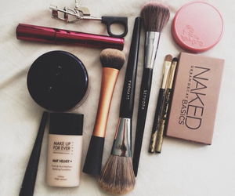

M E G A N F R I E N D
My Daily Makeup Routine

This post is going to be all about my everyday makeup.
Primer:
Dove Post Shave Balm For Men - Which everyone has been going on about.
Nyx Photo Loving Primer
Foundation:
Normally I mix two foundations together and they are:
Maybelline Fit Me Foundation
Mac Pro Longwear Foundation
Powder:
Mac
Bobbi Brown Sheer Finish Pressed Powder
Bronzer:
Benefit Hoola
Mascara:
Benefit
Lipstick:
Mac Velvet Teddy